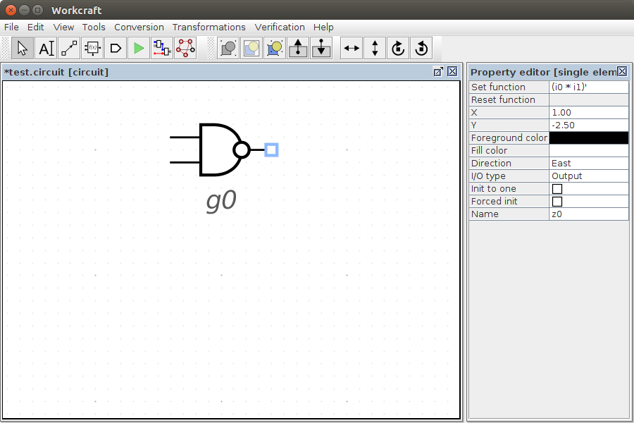
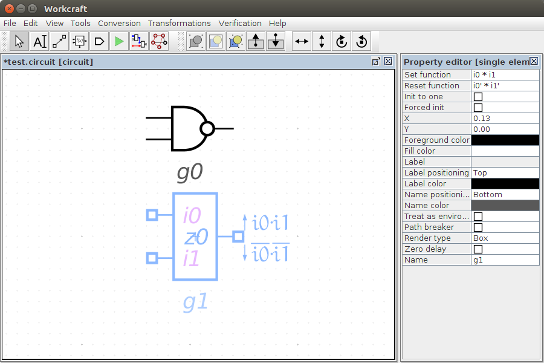
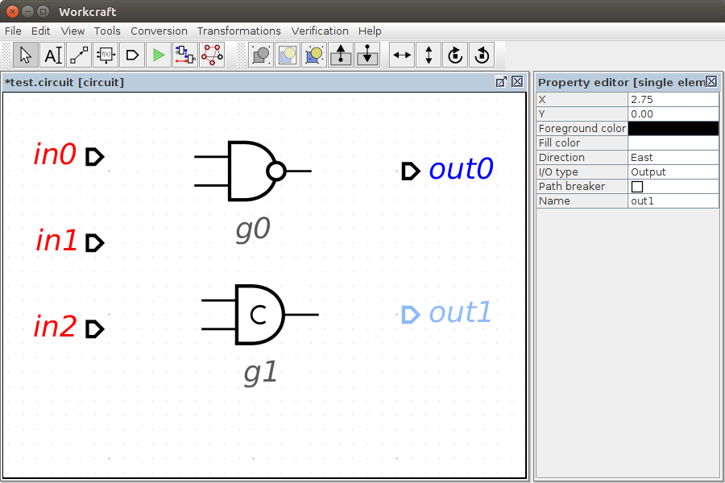
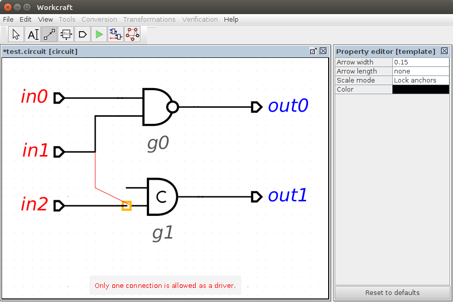
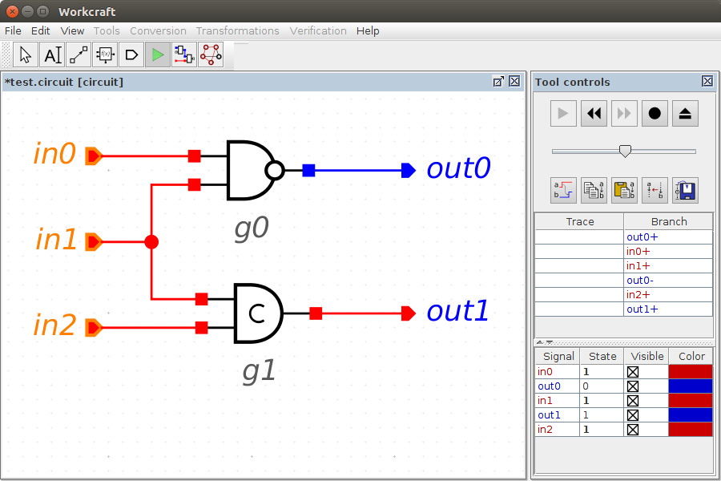
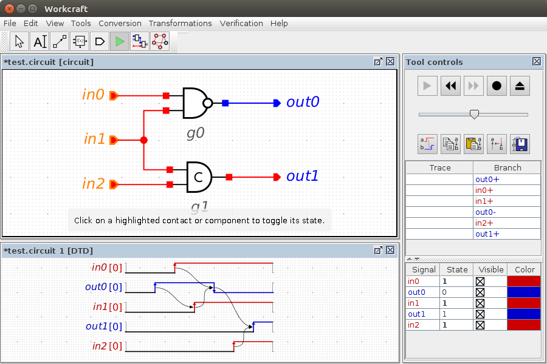
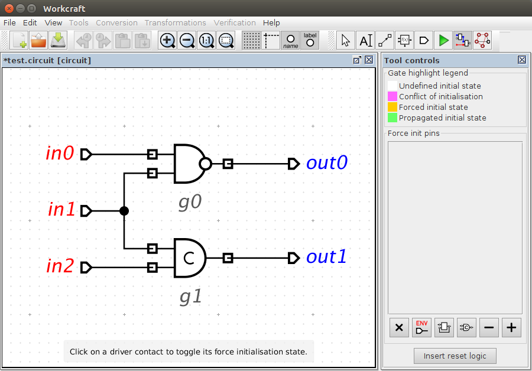
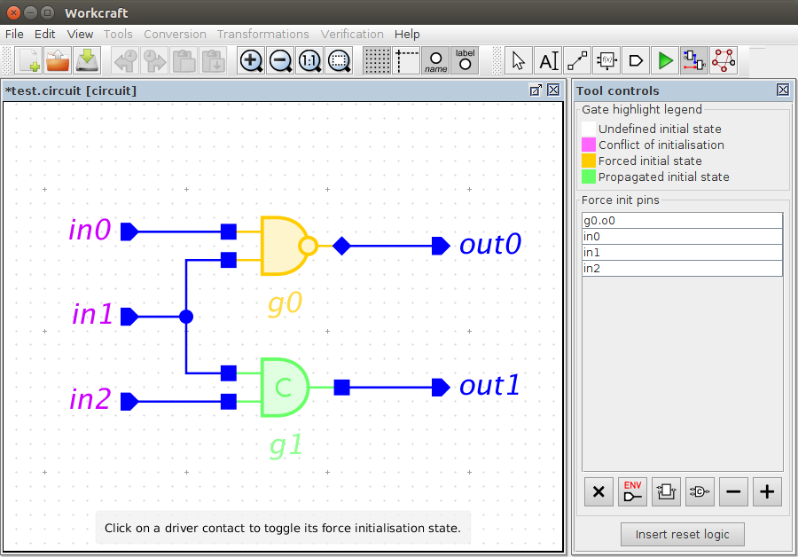
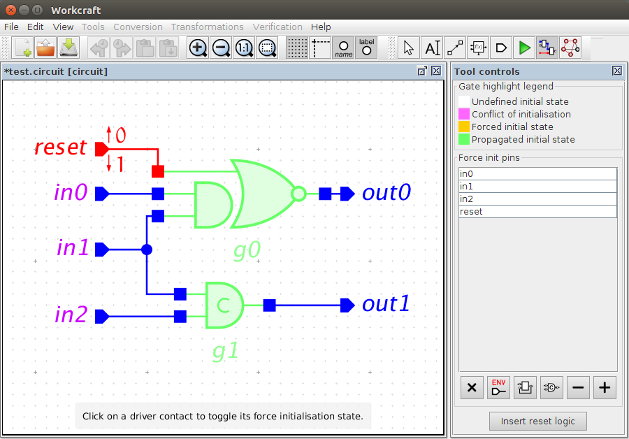

Table of Contents
Digital Circuit plugin
Familiarise yourself with Workcraft interface to learn its common features that are available for all plugins.
This plugin is intended for capturing, simulation and verification of asynchronous digital circuits. For simulation and verification the circuit is automatically translated into a Signal Transition Graph (STG) that allows re-using the features of the STG plugin.
Capturing
In order to create a circuit model choose File→Create work… menu item and in the New work dialogue select Digital Circuit as the model type.

Functional components
The main building blocks of a digital circuit are functional components that can be created with the function generator ![[F] Function](editor_tools-function.png "[F] Function") . Initially a generated component has only a single output pin (
. Initially a generated component has only a single output pin (z0 by default). New pins can be added through the Add output or Add input items of the popup menu (accessible by right-clicking the component). The pin name and type can be changed in the property editor – see Name and I/O type properties respectively.

Initially the output pin has neither set nor reset functions assigned. The set/reset functions can be specified by selecting the output pin and entering the corresponding Boolean expressions in the Set function and Reset function entries of the property editor. Note that if a component has a single output pin (which if is the majority of logic gates) then the set/reset functions can be also modified in the properties of the component.

A component visualisation is defined by its Render type selected in the property editor, as follows:
- Box – the component is visualises as a box with explicitly named pins and their set and reset functions rendered next to them. This render type is convenient when a component has more than one output or its set/reset functions are too complex.
- Gate – the set and reset functions of a single component output are visualised using the traditional graphical mnemonics for Boolean operations. The obtained result is free of textual information (even the pins are not labelled) and therefore is usually easier to comprehend. Rendering a component as gate is convenient when it has a single output with relatively simple set/reset functions. This is the default rendering type with the following visualisation rules:
- If both set and reset functions are specified then the component is rendered as a C-element.
- If only the set function is specified, then the reset function is assumed to be complimentary and the component is rendered as a combinational gate (possibly with several layers of logic).
- If the component cannot be rendered as a gate, e.g. because its set function is not empty or it has several output pins, then the Box visualisation is used.

Usually it is not necessary to explicitly create input pins. When a Set function or Reset function is entered for an output pin, the missing input pins are automatically created for all the literals in the Boolean expressions. Note that the input pins do not disappear if they become unneeded after modification of the set/reset functions. You may need to manually remove those pins by first selecting them and then pressing Delete button.
Input and output ports
Other building blocks of a digital circuit are its primary input and output ports. These are used to interact with the circuit environment. The ports are created with the port generator ![[P] Input/Output port](editor_tools-port.png "[P] Input/Output port") – just activate this editor tool and click the editor panel in a position you want to place the port. By default an output port is created, however, if you hold Shift while clicking the editor panel then an input port is created. Note that you can change the of existing port I/O type in the property editor too.
– just activate this editor tool and click the editor panel in a position you want to place the port. By default an output port is created, however, if you hold Shift while clicking the editor panel then an input port is created. Note that you can change the of existing port I/O type in the property editor too.

Connections
When the connection tool ![[C] Connect](../core/editor_tools-connect.png "[C] Connect") is active you can connect the pins of the circuit components and primary ports. The output pins and the input ports can be connected either to the input pins or to the output ports. Several connections may start at the same output pin or an input port, however, only a single connection can end up at an input pin or an output port. If an incorrect connection is attempted (e.g. a connection from an input pin to an output port or more than one connections to an input pin) then a warning message will be issued.
is active you can connect the pins of the circuit components and primary ports. The output pins and the input ports can be connected either to the input pins or to the output ports. Several connections may start at the same output pin or an input port, however, only a single connection can end up at an input pin or an output port. If an incorrect connection is attempted (e.g. a connection from an input pin to an output port or more than one connections to an input pin) then a warning message will be issued.

In order to reduce the number of arcs going from the same output pin (or an input port) and simplify the layout of the connection arc, one can “fork” the wires – just start a connection from an existing wire and a joint point will be automatically created. New connections can be also started from the existing joint points.

Editing
For editing the model activate the selection tool ![[S] Select](../core/editor_tools-select.png "[S] Select") . All the standard editing features (select, drag-and-drop, delete, copy, undo, group, etc.) work the same – see generic help on Selection controls and Property editor for details.
. All the standard editing features (select, drag-and-drop, delete, copy, undo, group, etc.) work the same – see generic help on Selection controls and Property editor for details.
Similar to all the other models, textual comments can be created by activating the ![[N] Text Note](../core/editor_tools-text_note.png "[N] Text Note") tool and clicking the editor panel in the position you want to put the text. Double-click on the note box to edit its text label in-place or do it through the property editor panel when the note is selected.
tool and clicking the editor panel in the position you want to put the text. Double-click on the note box to edit its text label in-place or do it through the property editor panel when the note is selected.
Simulation
For simulation of a Digital Circuit model activate the simulation tool ![[M] Simulate](../core/editor_tools-simulate.png "[M] Simulate") . The enabled pins and ports are highlighted and can be activated by clicking them. The simulation tool controls provide the means for analysis and navigation through the simulation trace, see generic help on Simulation controls for details. The circuit simulation is just an abstraction over the simulation of an automatically generated STG representation of the circuit components. Therefore all the specifics of STG simulation also apply to the Digital Circuit plugin.
. The enabled pins and ports are highlighted and can be activated by clicking them. The simulation tool controls provide the means for analysis and navigation through the simulation trace, see generic help on Simulation controls for details. The circuit simulation is just an abstraction over the simulation of an automatically generated STG representation of the circuit components. Therefore all the specifics of STG simulation also apply to the Digital Circuit plugin.
The state of circuit's signals is visualised by colouring the corresponding pins and wires either blue (for logical 0) or red (logical 1). Circuit pins associated with excited signals are highlighted and can be clicked to progress to the next state.
By default the circuit driver pins (input ports and the gate output contacts) are initialised to logical 0. This may lead to some of the circuit internal signals being excited when the simulation begins, e.g. the output out0 is 0, but evaluates to 1 (first transition in the simulation trace). There are two ways to change the initial values to the circuit signals:
- A driver pin can be set to logical
1by ticking the Init to one property of the pin. - Alternatively, in simulation mode, when a desired association of signal values is reached, this state can be saved as the initial state of the circuit by pressing this button –
 .
.

A circuit simulation trace can be converted to a Digital Timing Diagram by the generator of trace diagram  . The order, visibility, and color of signal waveforms are specified in the signal state table – see STG simulation help for details.
. The order, visibility, and color of signal waveforms are specified in the signal state table – see STG simulation help for details.

Verification
Verification of a digital circuit is usually made in the context of its environment. The environment can be described as an STG and attached to the circuit model using the property editor when no nodes are selected.
When a verification task is issued via the Verification menu, the circuit is first translated into an STG that is subsequently composed with the STG of the environment. The resultant STG is used for verification of the desired properties:
- Conformation [MPSat] – verify if the circuit conforms to the environment specification.
- Deadlock freeness [MPSat] – verify if the circuit is deadlock-free.
- Output persistency [MPSat] – verify if the circuit is output-persistent.
- Conformation, deadlock freeness, output persistency (reuse unfolding) [MPSat] – verify if the circuit conforms to the environment specification, is deadlock-free and output-persistent under the given environment.
Initialisation analyser
Initialisation (or reset) of a speed-independent circuit is an important part of the design process because a circuit can malfunction if its initial state is incorrect. Note that the initialisation phase of a speed-independent circuit does not have to be speed-independent: It is assumed that there is a special reset signal that is generated externally and behaves as follows:
- When the power is connected,
resetis low. - It stays low for sufficiently long time to complete the initialisation of all gates.
- Eventually
resetgoes high, at which point the circuit is already correctly initialised and the normal speed-independent operation begins. resetstays high for the whole time of circuit normal operation.
There are several ways of circuit initialisation that can be used in combination:
- Rely on the initial state of some of the inputs (which are guaranteed to be correctly initialised by the environment). They propagate through some of the logic gates to initialise some of the internal and output signals.
- Substitute some of the gates with ones containing an extra input that can act as a set or reset pin.
- Insert additional gates to explicitly initialise the internal and output signals. Such gates will act as buffers during the normal operation, so one has to be careful not to break any isochronic forks.
Initialisation analyser ![[I] Initialisation analyser](editor_tools-initialisation_analysis.png "[I] Initialisation analyser") tool is designed to aid the decision of how to reset a speed-independent circuit. The tool uses Init to one and Forced init properties of circuit signals (i.e. primary input ports and output pins of circuit components):
tool is designed to aid the decision of how to reset a speed-independent circuit. The tool uses Init to one and Forced init properties of circuit signals (i.e. primary input ports and output pins of circuit components):
- Init to one property defines the initial state of the signal. If a circuit is synthesised by one of the backend tools, then the initial state of all its signals is set automatically. However, if the circuit is manually altered, then the designer is responsible for specifying the initial states of the signals.
- Forced init property defines if the signal is known to be in a correct initial state. For a primary input it means the environment takes care of initialising the signal to its expected state. For a component output pin it means that the necessary circuitry will be added to properly initialise that pin.
These properties can be viewed and modified in the Property editor when an input port or an output pin is selected. Note that selecting a single-output component (i.e. a gate) also reveals these properties of its only output pin. Note that zero delay gates hide Force init property as these gates should not be modified.
Initialisation analyser uses these properties as follows. It considers the signals whose Forced init property is set as initialised, while the remaining signals are assumed as uninitialised. The tool tries to evaluate each uninitialised signal on the Init to one property of initialised signals. If the Boolean value of a signal can be derived, then it is said to have propagated initial state and the signal is also considered initialised. The tool repeats evaluation of uninitialised signals until no further progress can be made, i.e. no new initialised signals can be obtained. At this stage, if some signals are still uninitialised it means Forced init property of the circuit signals needs to be adjusted, until all the signals are successfully initialised.
Sometimes the correct initial state of a signal cannot be achieved and the signal is said to have initialisation problem. There are two sources of initialisation problems:
- Conflict of initialisation, which happens when the propagated initial state of a signal does not match its Init to one property. This often indicates a mistake, e.g. incorrect initial value of the signal, however, there are legitimate situations where such conflicts can occur.
- Unreachable initial state, which happens with sequential (self-dependent) signals whose expected initial state cannot be reached by assigning the component inputs.
In both cases such a problematic signal needs to be explicitly initialised by setting its Forced init property.
Initialisation analyser visualises the initialisation state using the Gate highlight legend shown in the Tool controls:

By default the highlighting scheme for circuit components is as follows (the colours can be adjusted in the preferences of digital circuit model – see Edit→Preferences…→Decoration→Analysis):
- Components whose initial state cannot be determined via propagation of forced signals are not highlighted (i.e. remain white).
- Zero delay components, which must not be modified by reset insertion, are highlighted grey.
- Components with initialisation problems (conflict of initialisation or unreachable initial state) are highlighted magenta.
- Components whose pins have Forced init property set are highlighted orange.
- Correctly initialised components are highlighted green.
The pins and ports are coloured according to their initialisation state (red for high level and blue for low level), as follows:
- The pin outline color indicates the expected initialisation state defined by the Init to one property, while its background color reflects the actual propagated initialisation state. In case of a mismatch (the propagated value differs from the expected one) the problematic pin can be easily identified by its different outline and background colours.
- Output pins whose Forced init property is set are visualised by diamond shape. The initial state of such pins is forced to the expected value, according to their Init to one property.
The color scheme for wires is as follows:
- Wires of uninitialised signals are coloured black.
- Wires of initialised signals are coloured red or blue according to their initial state.
Force init pins table enumerates the pins whose Forced init property is set. Note that Forced init property of a signal can be toggled while in Initialisation analyser tool by clicking the corresponding input port, output pin, or a gate. This enables convenient exploration of possible reset strategies. The tool also provides several ways of changing Force init property for a group of contacts:
") - Tag Forced init property for all input ports. Note that it is the environment responsibility to guarantee the correct initialisation of primary inputs whose Forced init property is set.
- Tag Forced init property for all input ports. Note that it is the environment responsibility to guarantee the correct initialisation of primary inputs whose Forced init property is set.
 - Tag Forced init property for all output pins with problematic initial state.
- Tag Forced init property for all output pins with problematic initial state.
 - Tag Forced init property for output pins of all sequential gates.
- Tag Forced init property for output pins of all sequential gates.
 - Set Forced init property of output pins as necessary to complete initialisation of the circuit.
- Set Forced init property of output pins as necessary to complete initialisation of the circuit.
 - Clear Forced init property of output pins that are redundant for the circuit initialisation.
- Clear Forced init property of output pins that are redundant for the circuit initialisation.
 - Clear Forced init property for all input ports and output pins.
- Clear Forced init property for all input ports and output pins.
Circuit initialisation comprises three steps:
- Reset exploration – Decide which signals should be forced to the initial state, so that the correct initial values propagate to the remaining circuit components. Selecting a good set of forced signals is a creative process with multiple optimisation targets (avoiding critical paths, circuit size, gate complexity, etc.) and relies on designer experience.
- Reset insertion – Insert the reset port
reset, set its Init to one property according to the reset active state (false for active low, true for active high), and use it to initialise all the signals that have Force init property set. - Reset validation – Clear Force init property of all component pins and input ports, set Force init property for the reset port, and check that all the circuit components are correctly initialised.
Consider our slightly modified circuit example with a zero delay inverter inserted before a NAND gate input. All the signals (except for the output of zero delay inverter) are initially expected (but not guaranteed!) to be 0, i.e. none of the driver pins have their Init to one property set. Let us explore initialisation strategies by activating Initialisation analyser :

Notice that zero delay inverter is shaded in grey and its initial state cannot be forced, i.e. it is a don't touch component. As no Forced init property is set there is no propagated initial state, however, gate g0 is highlighted in magenta as problematic. Indeed, its output expected initial state is low, but its Boolean function evaluates to high when applied to the expected state of inputs. To resolve such initialisation problem the initial state of problematic pins have to be forced. Click gate g0 of press button to set Force init property of g0 output pin – its highlighting color should change to orange indicating that it is the designers responsibility to force this gate to the expected state.
Let us assume that circuit's environment forces all the input ports to be in the expected state and indicate this by setting their Forced init property. This can be achieved by either clicking each input port, or by pressing button. The result should be as follows:

One can see that the C-element g1 has been properly initialised via its inputs – it is highlighted in green. The output of g0 is forced to its initial state – it is highlighted in orange.
Now the circuit does not have any initialisation conflicts, however, its gate g0 needs to be explicitly reset. This can be done automatically by pressing either Insert reset (active-high) or Insert reset (active-low) button. Here is a result of inserting active-high reset – g0 function is automatically modified to be resetable to 0, an input port reset is added and connected to the new pin of g0:

Now the circuit is correctly initialised via its primary inputs – all the gates are highlighted in green to indicate this. Note that the newly inserted reset port is constrained by its set and reset functions, therefore the circuit can be verified against the original environment STG without reset signal.
Cycle analyser
Combinational cycles are common in asynchronous circuits – they (along with latches) usually implement “memory” of the circuit. Verilog netlist for such cyclic circuits, however, may upset conventional EDA tools for timing analysis (e.g. Synopsys PrimeTime) and offline testing (e.g. Synopsys TetraMAX):
- Static timing analysis requires the circuit to be free of combinational cycles and breaks them by disabling some of the timing arcs. The choice of the timing arcs to disable, however, is often difficult to predict and suboptimal, and in particular may cause removal of timing paths that are important for timing analysis, e.g. critical paths.
- Offline testing may also be affected by the combinational cycles as they limit the controlability of the circuit – the ability to set every signal to a specific state via the circuit's primary inputs.
Workcraft introduces a Path breaker property for the component pins to explicitly break the combinational cycles. Interpretation of this property differs for the input and output pins of a gate:
- For each input pin whose Path breaker property is set, a
set_disable_timingconstraint is generated – it disables the timing arcs from that input pin, thus removing timing paths through the pin. These constraints can be dumped into an SDC file and subsequently used to explicitly instruct a timing analysis tool to disable specific timing arcs, rather than rely on its unpredictable arc selection algorithm. Careful selection of the timing arcs for disabling may help to break all the combinational cycles in the circuit while preserving the important/interesting timing paths. This requires creativity from the designer and is not always possible.
- For each output pin whose Path breaker property is set, a special element called testable buffer or testable inverter is inserted. Such testable elements need to be designed and characterised for each gate library, so the timing analysis tool is aware of their path breaking capability. Moreover, the testable elements can be further extended with SCAN features, making asynchronous design compatible with conventional DfT methodology [1].
Note that both ways of dealing with combinational cycles can be combined in the same circuit.
Cycle analyser ![[Y] Cycle analyser](editor_tools-cycle_analysis.png "[Y] Cycle analyser") tool provides a convenient GUI for exploration of loop breaking alternatives. It automates the removal of combinational cycles and the insertion of testing features in asynchronous circuits. Cycle analyser control panel looks as follows:
tool provides a convenient GUI for exploration of loop breaking alternatives. It automates the removal of combinational cycles and the insertion of testing features in asynchronous circuits. Cycle analyser control panel looks as follows:

When the tool is activated, the circuit gates are highlighted using the following scheme (the colours can be adjusted in the preferences of digital circuit model – see Edit→Preferences…→Decoration→Analysis):
- Zero delay gates and their output pins are highlighted grey. This is to indicate that zero delay gates cannot be delayed by inserting testable buffers. Input pins of zero delay gates can still be set as path breakers though.
- Components and pins that lay on a cycle are highlighted magenta.
- Pins whose Path breaker property is set are highlighted orange. Components with path breaker pins are also highlighted orange.
- Components and pins that do not belong to any cycle are highlighted green.
Path breakers table enumerates the pins whose Path breaker property is set. Note that Path breaker property of a pin can be toggled while in Cycle analyser tool by clicking the corresponding pin; clicking on a gate toggles Path breaker property of its only output. The change is immediately visualised via updated highlighting of components and pins. This enables convenient exploration of possible cycle breaking strategies.
Cycle analyser also provides several ways of changing Path breaker property for a group of output pins (input pins are not affected by these actions):
 - Tag Path breaker property for output pins of components with feedback loops. Note that feedback loops via zero-delay inverters or buffers are also included.
- Tag Path breaker property for output pins of components with feedback loops. Note that feedback loops via zero-delay inverters or buffers are also included.
 - Set Path breaker property of output pins as necessary to break all the cycles in the circuit.
- Set Path breaker property of output pins as necessary to break all the cycles in the circuit.
 - Clear Path breaker property of output pins that are redundant for breaking all cycles in the circuit.
- Clear Path breaker property of output pins that are redundant for breaking all cycles in the circuit.
 - Clear Path breaker property for all the pins.
- Clear Path breaker property for all the pins.
Once all the cycles are broken by strategically assigning the Path breaker property to the pins, the buttons at the bottom of the tool panel are used as follows:
- Insert TBUF/TINV – insert testable buffers/inverters after output pins with Path breaker property set. Note that insertion of testable buffers is optimised as follows: If the path breaker pin belongs to a buffer (inverter), or if the only gate it drives is a buffer (inverter), then, instead of inserting a new testable gate, that buffer (inverter) is converted into the testable buffer(testable inverter).
By default the testable buffer gate is TBUF with input I and output O; testable inverter gate is TINV with I and ON pins. These names can be changed in Edit→Preferences…→Models→Digital Circuit preferences via Testable buffer name and input-output pins and Testable inverter name and input-output pins settings.
- Insert SCAN – insert SCAN ports and connect them to the testable buffers.
When connecting a gate to scan ports its module name is automatically changed by adding _SCAN suffix. This default suffix can be changed in Edit→Preferences…→Models→Digital Circuit preferences via Scan module suffix setting. By default SCAN primary inputs are called scanck, scanen, scanin, and scanout while the corresponding pins of testable gates are CK, SE, SI, and SO (the latter is only used in multi-output components). These names can also be changed in Edit→Preferences…→Models→Digital Circuit preferences via Scan clock port / pin names, Scan enable port / pin names, Scan input port / pin names and Scan output poert / pin (for multi-output component) names settings.
- Write SDC… – write out an SDC file with
set_disable_timingconstraints for each input pin with Path breaker property set. This button is disabled if there are no input pins with Path breaker property set.
By default the produced SDC file uses the names of gates and pins as they are defined in the Property editor for the corresponding nodes. If necessary, these names can be substituted by providing a conversion file in Edit→Preferences…→Models→Digital Circuit preferences via Substitution rules for export setting. For example, libraries/workcraft-tsmc_ghp.cnv file has rules to convert librarys/workcraft.lib gates to match the naming convention of TSMC GHP library. This is a convenient way to convert a circuit (and its constraints) mapped into one gate library to be used with another library.